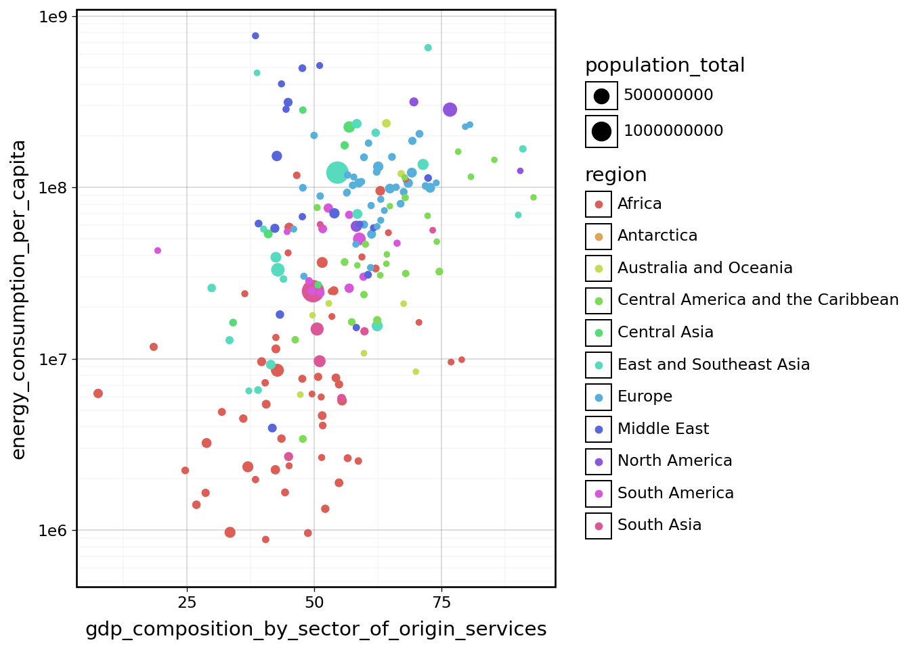
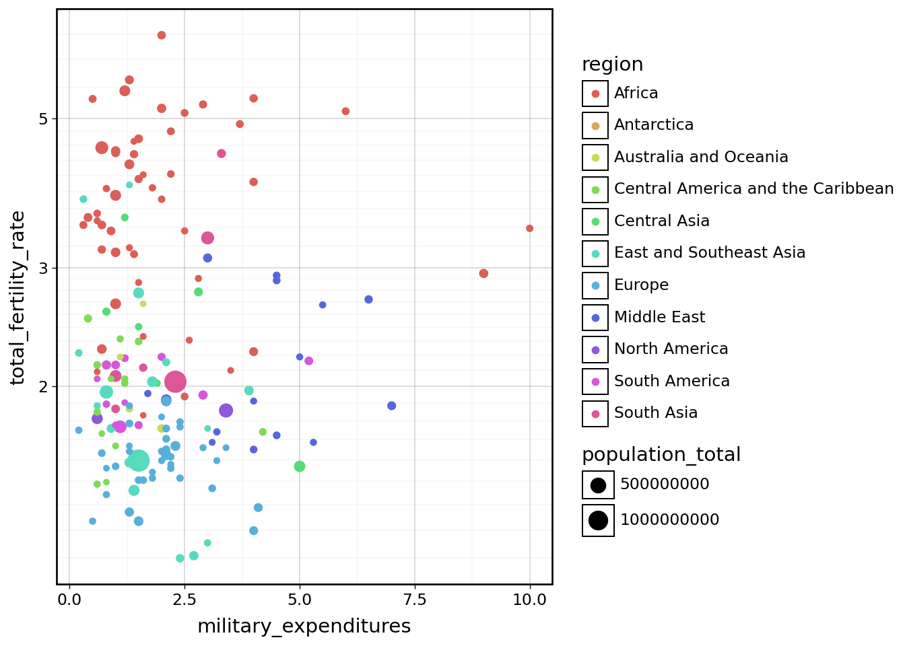

import polars as pl
import polars.selectors as cs
from plotnine import *
from gapminder import gapminder
from great_tables import GT
theme_set(theme_linedraw())Pivots and joins
Pivot
Earlier we mentioned that data frame consists of observations organized in rows and variable organized in columns. But not all data comes as well-organized as wel would want it to be. Today we are going to look at the sample of the data collected by the Break from Plastics environmental campaign. Here’s the description of the data:
In 2020, thanks to our members and allies, Break Free From Plastic engaged 14,734 volunteers in 55 countries to conduct 575 brand audits. These volunteers collected 346,494 pieces of plastic waste, 63% of which was marked with a clear consumer brand. Despite the challenges of organizing during a global pandemic, our volunteers safely coordinated more brand audit events in more countries this year than in the previous two years. As a special activity during the pandemic, we also worked with over 300 waste pickers to highlight their roles as essential workers. Participants catalogued over 5,000 brands in this year’s global audit. Our analysis reveals the following as the 2020 Top 10 Global Polluters: The Coca-Cola Company; PepsiCo; Nestlé; Unilever; Mondelez International; Mars, Inc.; Procter & Gamble; Philip Morris International; Colgate-Palmolive; and Perfetti Van Melle.
We are going to investigate this dataset and summarize it using Great Tables. Great Tables is a python package which implements “grammar of tables”, so in many respects it is similar in spirit to plotnine, in a sense that it attempts to develop a consistent API around production of tables making it very easy to produce nice looking summaries form data in table form. The main function in Great Tables is GT(). It takes data argument and many other useful options. We can use .pipe to pass the data into it.
In the code example provided to you in the notebook you can see the code for importing the data, as well as the dataframe containing the data dictionary for this dataset. The data frame is specified via a dictionary denoted with curly braces {}. Dictionaries are widely used in Python for passing “key-value” pairs.
plastics_df = pl.read_csv("bffp/BFFplastics.csv")
plastics_docs = pl.DataFrame({
"Variable": ["region", "country_code" , "country", "year", "parent_company", "empty", "hdpe", "ldpe", "o", "pet", "pp", "ps", "pvc", "grand_total", "num_events", "volunteers"],
"Class": ["character","character","character", "double", "character", "double", "double", "double", "double", "double", "double", "double", "double", "double", "double", "double"],
"Description": ["Region", "Alpha 3 ISO 3166 code","Country of cleanup", "Year (2019 or 2020)", "Source of plastic", "Category left empty count", "High density polyethylene count (Plastic milk containers, plastic bags, bottle caps, trash cans, oil cans, plastic lumber, toolboxes, supplement containers)", "Low density polyethylene count (Plastic bags, Ziploc bags, buckets, squeeze bottles, plastic tubes, chopping boards)", "Category marked other count", "Polyester plastic count (Polyester fibers, soft drink bottles, food containers (also see plastic bottles)", "Polypropylene count (Flower pots, bumpers, car interior trim, industrial fibers, carry-out beverage cups, microwavable food containers, DVD keep cases)", "Polystyrene count (Toys, video cassettes, ashtrays, trunks, beverage/food coolers, beer cups, wine and champagne cups, carry-out food containers, Styrofoam)", "PVC plastic count (Window frames, bottles for chemicals, flooring, plumbing pipes)", "Grand total count (all types of plastic)", "Number of counting events", "Number of volunteers"]
})
(plastics_docs
.pipe(GT)
)
(plastics_df.describe())
shape: (9, 17)
| statistic | region | country_code | country | year | parent_company | empty | hdpe | ldpe | o | pet | pp | ps | pvc | grand_total | num_events | volunteers |
|---|---|---|---|---|---|---|---|---|---|---|---|---|---|---|---|---|
| str | str | str | str | f64 | str | f64 | f64 | f64 | f64 | f64 | f64 | f64 | f64 | f64 | f64 | f64 |
| "count" | "12034" | "12034" | "12034" | 13380.0 | "13330" | 10137.0 | 11734.0 | 11303.0 | 13113.0 | 13166.0 | 11884.0 | 11408.0 | 9052.0 | 13366.0 | 13380.0 | 13273.0 |
| "null_count" | "1346" | "1346" | "1346" | 0.0 | "50" | 3243.0 | 1646.0 | 2077.0 | 267.0 | 214.0 | 1496.0 | 1972.0 | 4328.0 | 14.0 | 0.0 | 107.0 |
| "mean" | null | null | null | 2019.305232 | null | 0.411759 | 3.04602 | 10.319384 | 49.61359 | 20.940301 | 8.220801 | 1.862114 | 0.350088 | 90.15083 | 33.369806 | 1117.645295 |
| "std" | null | null | null | 0.460523 | null | 22.586066 | 66.123044 | 194.644067 | 1601.989534 | 428.157766 | 141.805081 | 39.737064 | 7.894296 | 1873.68134 | 44.708642 | 1812.402748 |
| "min" | "Africa" | "ARE" | "Argentina" | 2019.0 | ""ESE"" | 0.0 | 0.0 | 0.0 | 0.0 | 0.0 | 0.0 | 0.0 | 0.0 | 0.0 | 1.0 | 1.0 |
| "25%" | null | null | null | 2019.0 | null | 0.0 | 0.0 | 0.0 | 0.0 | 0.0 | 0.0 | 0.0 | 0.0 | 1.0 | 4.0 | 114.0 |
| "50%" | null | null | null | 2019.0 | null | 0.0 | 0.0 | 0.0 | 0.0 | 0.0 | 0.0 | 0.0 | 0.0 | 1.0 | 15.0 | 400.0 |
| "75%" | null | null | null | 2020.0 | null | 0.0 | 0.0 | 0.0 | 2.0 | 0.0 | 0.0 | 0.0 | 0.0 | 6.0 | 42.0 | 1416.0 |
| "max" | "Western Pacific" | "ZAF" | "Viet Nam" | 2020.0 | "脆司令/Cui Siling" | 2208.0 | 3728.0 | 11700.0 | 120646.0 | 36226.0 | 6046.0 | 2101.0 | 622.0 | 120646.0 | 145.0 | 31318.0 |
There are many missing values in this data. The year column covers 2019 and 2020. The different plastics types exibit different degrees of missingness.
First have a look at the data
plastics_df
plastics_df.filter(pl.col("country").is_null())
shape: (1_346, 16)
| region | country_code | country | year | parent_company | empty | hdpe | ldpe | o | pet | pp | ps | pvc | grand_total | num_events | volunteers |
|---|---|---|---|---|---|---|---|---|---|---|---|---|---|---|---|
| str | str | str | i64 | str | i64 | i64 | i64 | i64 | i64 | i64 | i64 | i64 | i64 | i64 | i64 |
| null | null | null | 2019 | "Grand Total" | null | 1535 | 6443 | 30181 | 11087 | 5420 | 2101 | 188 | 56955 | 145 | 1416 |
| null | null | null | 2019 | "Unbranded" | null | 631 | 3176 | 17432 | 4265 | 2417 | 1545 | 20 | 29486 | 145 | 1416 |
| null | null | null | 2019 | "The Coca-Cola Company" | null | 130 | 4 | 157 | 1154 | 210 | 1 | 51 | 1707 | 145 | 1416 |
| null | null | null | 2019 | "Philip Morris" | null | 13 | 37 | 1579 | 1 | 0 | 4 | 0 | 1634 | 145 | 1416 |
| null | null | null | 2019 | "Sahakari Jal" | null | 0 | 0 | 0 | 563 | 975 | 0 | 0 | 1538 | 145 | 1416 |
| … | … | … | … | … | … | … | … | … | … | … | … | … | … | … | … |
| null | null | null | 2019 | "Schulte" | null | 0 | 0 | 1 | 0 | 0 | 0 | 0 | 1 | 145 | 1416 |
| null | null | null | 2019 | "Schwartau" | null | 0 | 1 | 0 | 0 | 0 | 0 | 0 | 1 | 145 | 1416 |
| null | null | null | 2019 | "Schöfferhofer" | null | 0 | 0 | 1 | 0 | 0 | 0 | 0 | 1 | 145 | 1416 |
| null | null | null | 2019 | "Scotts Black Mulch" | null | 0 | 1 | 0 | 0 | 0 | 0 | 0 | 1 | 145 | 1416 |
| null | null | null | 2019 | "Cherry Valley marketplace" | null | 0 | 0 | 1 | 0 | 0 | 0 | 0 | 1 | 145 | 1416 |
Look at the very first row. The parent_company is Grand Total. It seems like this line contains the totals for Argentinian records for 2019.
However, for year 2020, the rows with totals per country are not marked with “Grand Total”, but rather are populated with the missing value
(plastics_df
.filter(pl.col("year")==2020))
shape: (4_084, 16)
| region | country_code | country | year | parent_company | empty | hdpe | ldpe | o | pet | pp | ps | pvc | grand_total | num_events | volunteers |
|---|---|---|---|---|---|---|---|---|---|---|---|---|---|---|---|
| str | str | str | i64 | str | i64 | i64 | i64 | i64 | i64 | i64 | i64 | i64 | i64 | i64 | i64 |
| "Americas" | "ARG" | "Argentina" | 2020 | null | 0 | 12 | 9 | 70 | 9 | 7 | 2 | 0 | 109 | 24 | 9 |
| "Americas" | "ARG" | "Argentina" | 2020 | "Aceitera Martinez S.A" | 0 | 0 | 0 | 0 | 1 | 0 | 0 | 0 | 1 | 24 | 9 |
| "Americas" | "ARG" | "Argentina" | 2020 | "AGD" | 0 | 0 | 0 | 3 | 1 | 0 | 0 | 0 | 4 | 24 | 9 |
| "Americas" | "ARG" | "Argentina" | 2020 | "Alfredo Willliner S.A" | 0 | 0 | 0 | 0 | 0 | 0 | 2 | 0 | 2 | 24 | 9 |
| "Americas" | "ARG" | "Argentina" | 2020 | "Alicorp Argentina" | 0 | 0 | 0 | 0 | 0 | 1 | 0 | 0 | 1 | 24 | 9 |
| … | … | … | … | … | … | … | … | … | … | … | … | … | … | … | … |
| "Western Pacific" | "VNM" | "Viet Nam" | 2020 | "Vinamilk" | 0 | 0 | 0 | 91 | 1 | 0 | 0 | 0 | 92 | 6 | 27 |
| "Western Pacific" | "VNM" | "Viet Nam" | 2020 | "VINH HAO CO." | 0 | 0 | 0 | 0 | 4 | 0 | 0 | 0 | 4 | 6 | 27 |
| "Western Pacific" | "VNM" | "Viet Nam" | 2020 | "Vital" | 0 | 0 | 0 | 0 | 4 | 0 | 0 | 0 | 4 | 6 | 27 |
| "Western Pacific" | "VNM" | "Viet Nam" | 2020 | "VM Group" | 0 | 2 | 0 | 0 | 0 | 0 | 0 | 0 | 2 | 6 | 27 |
| "Western Pacific" | "VNM" | "Viet Nam" | 2020 | "Yakult" | 0 | 0 | 0 | 0 | 0 | 2 | 0 | 0 | 2 | 6 | 27 |
Before we dive deeper into analyzing top contributors to plastic waste, lets look at the totals per country. We now have two options. We could populate the rows containing the totals with the phrase “Grand Total” and then use it to filter. This assumes that totals are calculated properly for all countries. We will basically disregard the majority of the dataset and rely on few rows that have been pre-computed for us.
An alternative strategy could be to drop all rows with invalid company name (marked with either “Grand Total” or left missing “null”) and recompute totals by hand for each of the count columns.
plastics_totals = (plastics_df
.drop("grand_total", "num_events", "volunteers")
.filter((pl.col("parent_company")!="Grand Total"),
(pl.col("parent_company").is_not_null()))
.group_by("country", "year")
.agg(pl.exclude("country", "year", "parent_company").drop_nulls().sum())
)# LEFT AS AN EXERCISE FOR THE USER
# fill the missing values in the parent_company column with the phrase "Grand Total".
# Since the parent company column is no longer informative, we can drop it.
plastics_totals_1 = (plastics_df
.drop("grand_total", "num_events", "volunteers")
.with_columns(pl.col("parent_company").fill_null("Grand Total"))
.filter(pl.col("parent_company")=="Grand Total")
.drop("parent_company")
)
# What did we miss?
(plastics_totals_1
.join(plastics_totals, on=["country", "year"], how="anti")
)
(plastics_totals
.join(plastics_totals_1, on=["country", "year"], how="anti")
)
# does not have row for the total
tmp1_df = (plastics_df
.filter(pl.col("country")=="Slovenia",
pl.col("year")==2020)
)
# does not have any records other than the total
tmp2_df = (plastics_df
.filter(pl.col("country")=="United Arab Emirates",
pl.col("year")==2020)
)
tmp2_df = (plastics_totals
.filter(pl.col("country").is_null())
)We do have grand_total column which seems to be a sum of columns empty:pvc describing counts for different type of plastic. Let’s say our goal is to make a chart describing the composition of trash by plastic type in different countries. In order to calculate proportions as we did previously, we need to have multiple observations for each country, one for each plastic type. Then we will calculate proportion over the country (and year).
plastics_long_df = (plastics_df
.drop("grand_total", "num_events", "volunteers")
.with_columns(pl.col("parent_company").fill_null("Grand Total"))
.filter(pl.col("parent_company")=="Grand Total")
.drop("parent_company")
#.unpivot(index=["country", "year"], variable_name="plastic_type", value_name="quantity")
.unpivot(index=cs.by_name("country", "year"), variable_name="plastic_type", value_name="quantity")
.with_columns(pl.col("quantity").fill_null(0))
)
# In `.unpivot()` the `on` argument is optional. Everything other than indexPivot is making the data wider
(plastics_long_df
.pivot(on="year", values="quantity")
)
# In `.pivot()` the `index` is optional. All remaining columns not specified in `on` and `values` will be used.
# either index or values need to be specified
shape: (650, 4)
| country | plastic_type | 2019 | 2020 |
|---|---|---|---|
| str | str | str | str |
| "Argentina" | "region" | "Americas" | "Americas" |
| "Australia" | "region" | "Western Pacific" | "Western Pacific" |
| "Bangladesh" | "region" | "South-East Asia" | null |
| "Benin" | "region" | "Africa" | "Africa" |
| "Bhutan" | "region" | "South-East Asia" | null |
| … | … | … | … |
| "Peru" | "pvc" | null | "1" |
| "Romania" | "pvc" | null | "0" |
| "Serbia" | "pvc" | null | "0" |
| "Singapore" | "pvc" | null | "0" |
| "Togo" | "pvc" | null | "0" |
(plastics_long_df
.pivot(on="year", index="country", values="quantity", aggregate_function='sum')
)
plastics_campaigns_df = (plastics_long_df
.pivot(on="year", index=["country", "plastic_type"], values="quantity")
.group_by("country")
.agg(pl.all().exclude("country", "plastic_type").fill_null(0).sum())
)
(plastics_campaigns_df
.filter(pl.col("country").is_in(["Germany", "Netherlands", "Switzerland", "France", "Spain", "Italy"]))
.pipe(GT)
.cols_label(
country="Country")
.tab_spanner("Year", columns=["2019", "2020"])
.tab_header(
title = "Break Free From Plastics campaigns",
subtitle = "Brand plastic counts in some European countries")
.tab_source_note(
source_note="Source: BFFP data via TidyTuesday 2021-01-26"
)
)| Break Free From Plastics campaigns | ||
|---|---|---|
| Brand plastic counts in some European countries | ||
| Country | Year | |
| 2019 | 2020 | |
| Spain | None | None |
| Italy | None | None |
| Germany | None | None |
| France | None | None |
| Switzerland | None | None |
| Source: BFFP data via TidyTuesday 2021-01-26 | ||
joins
band_members = pl.DataFrame({
"name": ["Mick", "John", "Paul"],
"band": ["Stones", "Beatles", "Beatles"]
})
band_instruments = pl.DataFrame({
"name": ["John", "Paul", "Keith", "Ringo"],
"plays": ["guitar", "bass", "guitar", "drums"]
})Left join
(band_members
.join(band_instruments, on="name", how="left"))
shape: (3, 3)
| name | band | plays |
|---|---|---|
| str | str | str |
| "Mick" | "Stones" | null |
| "John" | "Beatles" | "guitar" |
| "Paul" | "Beatles" | "bass" |
Full join
(band_members
.join(band_instruments, on="name", how="full"))
shape: (5, 4)
| name | band | name_right | plays |
|---|---|---|---|
| str | str | str | str |
| "John" | "Beatles" | "John" | "guitar" |
| "Paul" | "Beatles" | "Paul" | "bass" |
| null | null | "Keith" | "guitar" |
| null | null | "Ringo" | "drums" |
| "Mick" | "Stones" | null | null |
(band_members
.join(band_instruments, on="name", how="full", coalesce=True))
shape: (5, 3)
| name | band | plays |
|---|---|---|
| str | str | str |
| "John" | "Beatles" | "guitar" |
| "Paul" | "Beatles" | "bass" |
| "Keith" | null | "guitar" |
| "Ringo" | null | "drums" |
| "Mick" | "Stones" | null |
Inner join (Default)
(band_members
.join(band_instruments, on="name", how="inner"))
shape: (2, 3)
| name | band | plays |
|---|---|---|
| str | str | str |
| "John" | "Beatles" | "guitar" |
| "Paul" | "Beatles" | "bass" |
Anti join
(band_members
.join(band_instruments, on="name", how="anti"))
shape: (1, 2)
| name | band |
|---|---|
| str | str |
| "Mick" | "Stones" |
And reverse. Note the swapped order of datasets.
(band_instruments
.join(band_members, on="name", how="anti"))
shape: (2, 2)
| name | plays |
|---|---|
| str | str |
| "Keith" | "guitar" |
| "Ringo" | "drums" |
Most commonly used join is left. If you dont know which join you need, you need “left” join. Pay attention which dataset is on your left.
For the curious right join allows you to perform left join in the opposite direction (without swapping the datasets). You should do “right join” only as the last resort, when you can not change the dataset order.
Full join introduces missing value, inner join drops records, left join does both, but thats what you probably want. Anti-join is useful for checking which records will get dropped if you perform an inner join. Do it in both directions!
There’s something that’s called “semi-join” but it is more like a filter. It will return the left dataset WITHOUT any additional information, filtered to only those records you have on the right.
(band_instruments
.join(band_members, on="name", how="semi"))
shape: (2, 2)
| name | plays |
|---|---|
| str | str |
| "John" | "guitar" |
| "Paul" | "bass" |
Let’s look at the data.
fact_area_df = pl.read_csv("cia/factbook_area_2024.csv", null_values="NA")
fact_comm_df = pl.read_csv("cia/factbook_comm_transport_2024.csv", null_values="NA")
fact_econ_df = pl.read_csv("cia/factbook_economy_security_2024.csv", null_values="NA")
fact_energy_df = pl.read_csv("cia/factbook_energy_environment_2024.csv", null_values="NA")
fact_ppl_df = pl.read_csv("cia/factbook_people_society_2024.csv", null_values="NA")print("People dataset dimensions:", fact_ppl_df.shape[0])
print("Energy dataset dimensions:", fact_energy_df.shape[0])People dataset dimensions: 237
Energy dataset dimensions: 226left join
How many records will be returned if we perform left join on this? Correct answer is 237. Creates missing values.
(
fact_ppl_df
.join(fact_energy_df, on=["name", "slug", "region"], how="left")
)
shape: (237, 23)
| name | slug | region | alcohol_consumption_per_capita | birth_rate | children_under_the_age_of_5_years_underweight | death_rate | education_expenditures | infant_mortality_rate | life_expectancy_at_birth | maternal_mortality_ratio | median_age | net_migration_rate | obesity_adult_prevalence_rate | population_total | population_growth_rate | tobacco_use | total_fertility_rate | carbon_dioxide_emissions | electricity_installed_generating_capacity | energy_consumption_per_capita | revenue_from_coal | revenue_from_forest_resources |
|---|---|---|---|---|---|---|---|---|---|---|---|---|---|---|---|---|---|---|---|---|---|---|
| str | str | str | f64 | f64 | f64 | f64 | f64 | f64 | f64 | i64 | f64 | f64 | f64 | i64 | f64 | f64 | f64 | i64 | i64 | i64 | f64 | f64 |
| "Cook Islands" | "cook-islands" | "Australia and Oceania" | 12.97 | 12.1 | null | 9.4 | 4.6 | 15.1 | 77.6 | null | 41.1 | -25.1 | 55.9 | 7761 | -2.24 | 24.0 | 2.02 | 87000 | 17000 | null | null | null |
| "Latvia" | "latvia" | "Europe" | 12.9 | 8.3 | 21.1 | 14.7 | 6.0 | 4.7 | 76.4 | 18 | 45.5 | -4.9 | 23.6 | 1801246 | -1.14 | 37.0 | 1.55 | 6458000 | 3233000 | 64272000 | 0.0 | 0.85 |
| "Czechia" | "czechia" | "Europe" | 12.73 | 9.8 | null | 12.0 | 5.1 | 2.6 | 78.6 | 3 | 44.2 | 2.7 | 26.0 | 10837890 | 0.04 | 30.7 | 1.73 | 91213000 | 21914000 | 149874000 | 0.14 | 0.17 |
| "Lithuania" | "lithuania" | "Europe" | 11.93 | 8.9 | 2.5 | 15.2 | 4.0 | 3.6 | 76.1 | 9 | 45.1 | -4.1 | 26.3 | 2628186 | -1.05 | 32.0 | 1.62 | 12803000 | 4258000 | 85201000 | 0.0 | 0.31 |
| "Austria" | "austria" | "Europe" | 11.9 | 9.3 | null | 9.9 | 5.1 | 3.2 | 82.7 | 5 | 44.9 | 3.5 | 20.1 | 8967982 | 0.3 | 26.4 | 1.52 | 57876000 | 29810000 | 123110000 | 0.0 | 0.07 |
| … | … | … | … | … | … | … | … | … | … | … | … | … | … | … | … | … | … | … | … | … | … | … |
| "Tokelau" | "tokelau" | "Australia and Oceania" | null | null | null | null | null | null | null | null | null | -3.84 | null | 1647 | -0.01 | null | null | null | null | null | null | null |
| "Svalbard" | "svalbard" | "Europe" | null | null | null | null | null | null | null | null | null | -5.57 | null | 2926 | -0.03 | null | null | null | null | null | null | null |
| "Norfolk Island" | "norfolk-island" | "Australia and Oceania" | null | null | null | null | null | null | null | null | null | null | null | 1748 | 0.01 | null | null | null | null | null | null | null |
| "Holy See (Vatican City)" | "holy-see-vatican-city" | "Europe" | null | null | null | null | null | null | null | null | null | null | null | 1000 | 0.0 | null | null | null | null | null | null | null |
| "Pitcairn Islands" | "pitcairn-islands" | "Australia and Oceania" | null | null | null | null | null | null | null | null | null | null | null | 50 | 0.0 | null | null | null | null | null | null | null |
The inner join drops “unmatched” observations from both sides
(
fact_ppl_df
.join(fact_energy_df, on=["name", "slug", "region"], how="inner")
.shape
)(223, 23)Full join will keep unmatched observations on both sides.
(
fact_ppl_df
.join(fact_energy_df, on=["name", "slug", "region"], how="full", coalesce=True)
.shape
)(240, 23)Join all of these datasets.
fact_all_df = (
fact_area_df
.join(fact_econ_df, on=["name", "slug", "region"], how="left")
.join(fact_energy_df, on=["name", "slug", "region"], how="left")
.join(fact_comm_df, on=["name", "slug", "region"], how="left")
.join(fact_ppl_df, on=["name", "slug", "region"], how="left")
)(
ggplot(fact_all_df)+
geom_point(mapping=aes(x="gdp_composition_by_sector_of_origin_services", y="energy_consumption_per_capita", color="region", size="population_total"))+
scale_y_log10()+
scale_size_continuous()
)/home/dm0737pe/Projects/DATA24WEB/.venv/lib/python3.10/site-packages/plotnine/layer.py:364: PlotnineWarning: geom_point : Removed 64 rows containing missing values.
(
ggplot(fact_all_df)+
geom_point(mapping=aes(x="military_expenditures", y="total_fertility_rate", color="region", size="population_total"))+
scale_y_log10()
)/home/dm0737pe/Projects/DATA24WEB/.venv/lib/python3.10/site-packages/plotnine/layer.py:364: PlotnineWarning: geom_point : Removed 90 rows containing missing values.
Stacking
# indoor air pollution
hhap_deaths = pl.read_csv("hhap/hhap_deaths.csv")
clean_fuels = pl.read_csv("hhap/clean_fuels_cooking.csv")
fuel_types = pl.read_csv("hhap/cooking_by_fuel_type.csv")Another common type of operation is stacking two identical datasets together (vertically). This is possible to do when the meaning of the columns in the datasets is the same and we are interested in combining two parts of identical data into a new and larger dataset.
Recall that in our household air pollution case study we had three files: - hhap_deaths - containing death cases, associated with air pollution - fuel_types - describing information about the fuels used by population in different countries for household needs - clean_fuels - containing the fraction of population in each country with access to clean fulels for cooking
All three of these datasets contain three identical columns describing the country of observation: region, country_code and country. The countries listed in each of the datasets is largely similar, but not completely overlapping. Let’s see if we can compile a single master set of all countries with the codes and the regions they belong to. Because the data is recorded over many years each of the datasets contains many duplicates entries. This problem will be even larger when we stack the data from several datasets together, so we will need to ensure the records in our final (combined) dataset are unique.
idcols=cs.by_name("region", "country_code", "country")
country_regions = (hhap_deaths.select(idcols)
.vstack(fuel_types.select(idcols))
.vstack(clean_fuels.select(idcols))
.unique()
)Note, that here we created a temporary object idcols, which will store only selector object for the three columns we are interested in. Polar selectors are independent entities which can live both inside the querying contexts as well as in the global environment, i.e. in memory accessible
Lets compare our country codes with the full list of codes issued by ISO. Here’s a file with all Alpha 2 and Alpha 3 codes issued to nation states and territories.
iso_df = pl.read_csv("hhap/CountryCodes_Alpha2_Alpha3.csv")
(country_regions
.join(iso_df, left_on="country_code", right_on="alpha3", how="anti"))
(country_regions
.join(iso_df, left_on="country_code", right_on="alpha3", how="left"))
# How many countries are not present in the combined household air pollution dataset?
# What proportion of those countries have the world "Island" in their name?
tmp_df1 = (iso_df
.join(country_regions, left_on="alpha3", right_on="country_code", how="anti"))
(iso_df
.join(country_regions, left_on="alpha3", right_on="country_code", how="anti")
.select(pl.col("country").str.contains("Island").mean())
)
(iso_df
.join(country_regions, left_on="alpha3", right_on="country_code", how="anti")
.group_by(pl.col("country").str.contains("Island").alias("island"))
.len()
.with_columns(pl.col("len")/pl.sum("len"))
.filter("island")
)
shape: (1, 2)
| island | len |
|---|---|
| bool | f64 |
| true | 0.259259 |
Horizontal stacking is possible, but you probably want to do a join instead, because horizontal stacking assumes that row order is the same and observations are identical. This is better ensured with unique IDs which could be used for join.